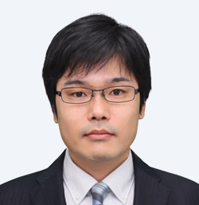
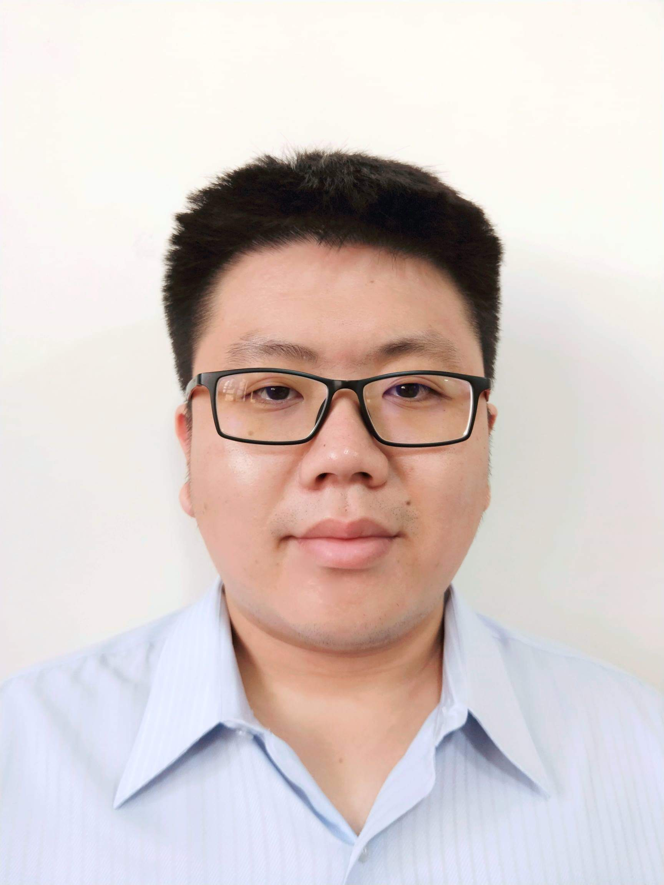
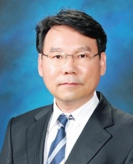
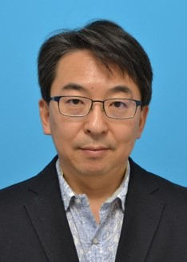
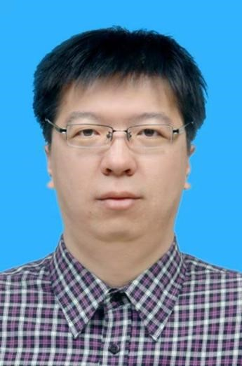

Keynote
Dr. Mitsuaki Akiyama (NTT Secure Platform Laboratories)

Ethical Offensive Cybersecurity Research
Abstract
Offensive security research is a proactive and adversarial approach to find latent threats or vulnerabilities in ICT systems. It plays a key role to facilitate an innovation that creates a new paradigm for security and privacy. However, how to address the gap between researchers and society is an annoying problem for offensive security researchers. I provide three case studies of our “ethical” offensive research, which concerns IoT, Android, and Web, through our successful activities of responsible disclosure. Finally, I introduce an ongoing cross-organizational activity for facilitating ethical security research in Japan.
Biography
Mitsuaki Akiyama received his M.E. and Ph.D. degrees in information science from Nara Institute of Science and Technology, Japan in 2007 and 2013. Since joining Nippon Telegraph and Telephone Corporation (NTT) in 2007, he has been engaged in research and development on cybersecurity. His developed systems have been used for many cybersecurity projects sponsored by Japan's Ministry of Internal Affairs and Communications (MIC). He has served as a technical committee in cybersecurity conferences (IWSEC 2016-2019, COMPSAC 2017-2019, and ESORICS 2019). He is currently a Senior Distinguished Researcher with the Cyber Security Project of NTT Secure Platform Laboratories. His research interests include cybersecurity measurement, offensive security, and usable security and privacy.
Invited Talks
Prof. Yi-Fan Tseng (National Chengchi University)

The Relationship Between Attribute-Based Encryption and Other Cryptographic Primitives
Abstract
Attribute-based encryption is a one-to-many encryption which is suitable for lots of modern applications. In an attribute-based encryption system, the requirement for successful decryption is that the attributes must satisfy a predetermined access structure. In this presentation, we will show some relationship between attribute-based encryption and other cryptographic primitives, e.g., identity-based encryption, identity-based broadcast encryption. By applying such relationships, we may apply the results of a primitive to another primitive, and thus some new results may be discovered.
Biography
Yi-Fan Tseng was born in Kaohsiung, Taiwan. He received the Ph.D. degree and MS degree in computer science and engineering from National Sun Yat-sen University, Taiwan, in 2014 and 2018, respectively. From 2018 to 2019, as a postdoctoral researcher, he joined the research group of Taiwan Information Security Center at National Sun Yat-sen University (TWISC@NSYSU). In 2019, he has joined the faculty of the Department of Computer Science, National Chengchi University, Taipei, Taiwan. His research interests include cloud computing and security, network and communication security, information security, cryptographic protocols, and applied cryptography.
Prof. Heung Youl Youm (Soonchunhyang University)

Overview of standardization activities for de-identification techniques
Abstract
Organizations that are collecting and maintaining data would like to use and share as widely as possible while protecting privacy of data owner. Personally identifiable information is any information about an individual maintained by an organization, including any information that can be used to distinguish or trace an individual’s identity and (2) any other information that is linked or linkable to an individual, A de-identification technique is an important tool that organizations can use to minimize the privacy risk associated with creating, using, archiving, sharing and even publishing data containing personally identifiable information. This invited talk will provide overview of de-identification process and review typical existing de- identification techniques supporting privacy of individual. This talk will focus on the standardization activities for de-identification techniques and future standardization direction for these international standardization activities.
Biography
Dr Heung Youl Youm is working as a professor for the Department of Information Security
Engineering of the Soonchunhyang University, Korea from September 1990. He is currently the
Director of SCH Cybersecurity Research Centre from Dec. 2013. He has served as general co-
chair for Asia-JCIS conference since 2011.
He is Chairman of ITU-T SG17 (Security) since November 2016. He began participating in ITU-
T SG 17 in 2003 and has actively contributed to the work of SG17 as a core member of security
experts. He was an associate Rapporteur of SG 17 Question 10/17 from 2003 to 2004. For the
Study Period (2005 – 2008), he served as a Rapporteur of Question 9/17. He was a Vice
Chairman of ITU-T Study Group 17 from 2009 to 2016. He was a Chairman of Working Party 2
(Application Security) of SG17 for the Study Period (2009–2012) and was a Chairman of
Working Party 3 (Identity management and cloud computing security) of SG17 for the Study
Period (2013–2016). He has been a Project Editor or Co-editor for 29 approved ITU-T
Recommendations or agreed Supplements in the area of IPTV security, home network security,
authentication protocol, USN security, mobile security, IoT and cybersecurity.
He was a president of KIISC (Korea Institute on information security and cryptology) in 2011 and
is an emeritus president of KIISC. He had worked for ETRI as a senior research engineer from
1982 to 1990. He had been involved in developing high speed transmission system.
He had been involved in many (advisory or self-performance evaluation) committees for the
Korea Communications Commission (KCC) from 2008 to 2016, the Ministry of Science, ICT and
Future Planning (MSIP) from 2013 to 2017, the Ministry of Industry and Energy (MoTIE) from
2015 to 2017. He has been involved in self-performance evaluation) committees for the Ministry
of Science and ICT since 2017.
He is a Chairman for the ISMS/PIMS certification committee in Korea since 2007 and had been
the chairman for the committee on information security in the PyeongChang Organizing
Committee for the 2018 Olympic & Paralympic Winter Games from January 2015 to May 2018.
He received a Bachelor degree in 1981, a Master degree in 1983, and a Ph.D. degree in 1990,
all in Electronics Engineering from Hanyang University, Korea.
Prof. Makoto Nagata (Kobe University)

Challenges: Deployment of EMC-Compliant IC Chip Techniques in Design for Hardware Security
Abstract
IC chips are key enablers of densely networked smart society and need to be more compliant to security and safety. The talk will start from Electromagnetic Compatibility (EMC) techniques of IC chips on the safety side, toward EMC aware design, analysis and implementation. Then, the challenges will be discussed about the deployment of such EMC techniques in the design of IC chips for the higher level of hardware security. In detail, the talk will start with Silicon experiments on electromagnetic susceptibility (noise immunity) and electromagnetic interference (noise emission) of IC chips in automotive applications, covering on-chip/in-place noise measurement (OCM) and chip-package-system board (CPS) simulation techniques. Then, the talk will evolve for side-channel leakage analysis and resiliency by design in cryptographic IC chips.
Biography
Makoto Nagata received the B.S. and M.S. degrees in physics from Gakushuin University, Tokyo, in 1991 and 1993, respectively, and the Ph.D in electronics engineering from Hiroshima University, Hiroshima, in 2001. He was a research associate at Hiroshima University from 1994 to 2002, an associate professor of Kobe University from 2002 to 2009, and then promoted to a full professor. He is currently a professor of the graduate school of science, technology and innovation, Kobe University, Kobe, Japan. He is a senior member of IEEE and IEICE. Dr. Nagata is chairing Technology Directions subcommittee for International Solid-State Circuits Conference (ISSCC) since 2018. He served as a technical program chair (2010-2011) and symposium chair (2012-2013) for Symposium on VLSI circuits. He is currently an associate editor for IEEE Transactions on VLSI Systems since 2015.
Prof. Weizhe Zhang (Peng Cheng Laboratory)

DAMBA: Detecting Android Malware by ORGB Analysis
Abstract
With the rapid development of smart devices, mobile phones have permeated many aspects of our life. Unfortunately, their widespread popularization attracted endless attacks that seriously threat users. As the mobile system with the largest market share, Android has already become the hardest hit for years. To Detect Android Malware by ORGB Analysis, we present DAMBA, a novel prototype system based on C/S architecture. DAMBA extracts the static and dynamic features of apps. For further analyses, we propose TANMAD algorithm, a two-step Android malware detection algorithm, which reduces the range of possible malware families, and then utilizes sub-graph isomorphism matching for malware detection. The key novelty of our work is the modeling of object reference information by constructing directed graphs, which is called ORGB. To achieve better efficiency and accuracy, we present several optimization strategies for hybrid analysis. DAMBA is evaluated on a large real-world dataset of 2; 239 malicious and 1; 000 popular benign apps. The detection accuracy reaches 100% in most cases, and the average detection time is less than 5s. Experimental results show that DAMBA outperforms the well-known detector, McAfee, which is based on signature recognition. In addition, DAMBA is demonstrated to resist the known malware attacks and their variants efficiently, as well as malware that uses obfuscation techniques.
Biography
Prof. Weizhe Zhang is currently the Dean of Cyberspace Security Research Center, Peng Cheng Laboratory, Shenzhen, China and a Professor and Ph.D. Supervisor in the School of Computer Science and Technology, Harbin Institute of Technology, China. He received his B.Eng, M.Eng and Ph.D. degree of Engineering in computer science and technology in 1999, 2001 and 2006 respectively from Harbin Institute of Technology. He has been a visiting professor at the Department of Computer Science, University of Illinois at Urbana-Champaign (UIUC), USA, from Aug. 2013 to Aug 2014. He has been a visiting scholar at the Department of Computer Science, University of Houston (UH), USA, from Aug. 2005 to Feb 2006. He is the Associate Editor or Editorial Board of more than 10 journals. Dr. Zhang has published around 100 scientific papers in the well-established journals including IEEE transactions on computers, IEEE transactions on cloud computing, IEEE transactions on reliability, and in the reputable conferences such as IEEE CLUSTER, IEEE IPDPS, IEEE ICPADS, ACM CIKM, IFIP NPC etc. He conducts research in cyberspace security , high performance computing, parallel and distributed system, cloud computing, real-time computing and computer network&security. He is a senior member of the IEEE, a lifetime member of ACM.